Room type, audience size, daily usage, display visibility, audio clarity, source devices, uptime expectations and support timeline.
Solutions by Industry
Choose your industry. See what GPSPL can supply, design, integrate and support.
Every business space is different. A school needs easy teaching tools. A hotel needs guest experience. A command room needs uptime. GPSPL maps the right products, brands, installation scope and support plan for each industry.
How to read this page
Industry first, then product choice.
Many buyers do not start with product names. They start with a problem: meetings are hard, students cannot see clearly, signage is not managed, or the support team is too slow. This page connects your industry to the right solution pages.
Displays, LED walls, projectors, microphones, speakers, cameras, KVM, control, UPS, interactive panels, IT products and required accessories.
Site survey, product selection, BOQ, installation, cabling, commissioning, training, documentation, warranty coordination and AMC support.
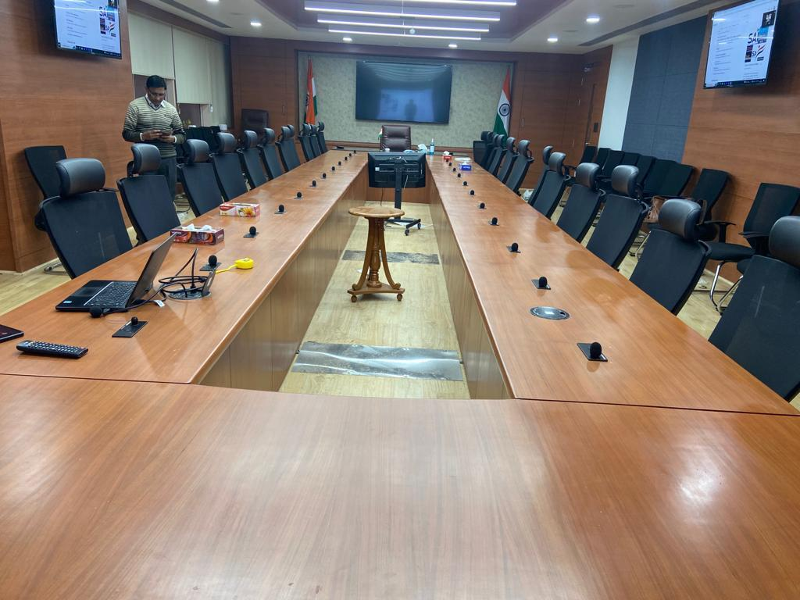
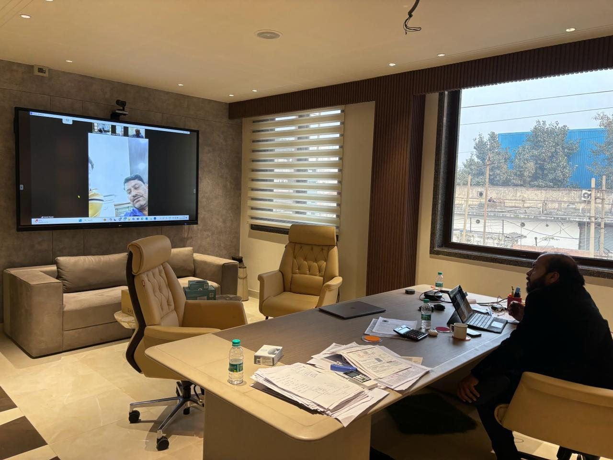
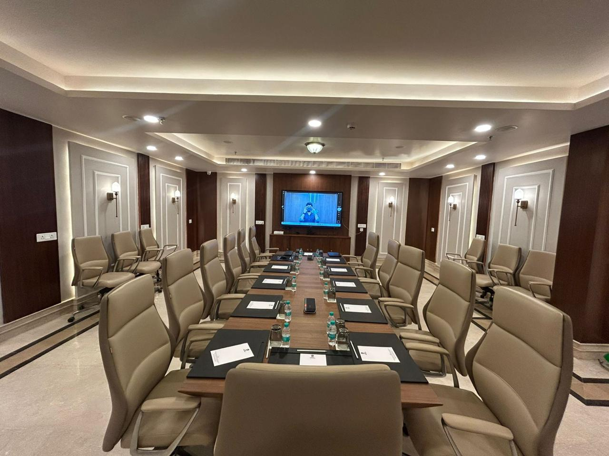
Client / environment examples
McKinsey
Emaar
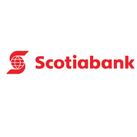
ScotiabankCandor TechSpace
Elan
ATS Infrastructure
Corporate & Commercial Workspaces
Boardrooms, meeting rooms and office technology that people can use every day.
Corporate teams need clear meetings, easy screen sharing, reliable audio and support that does not stop after installation.
What you require
- Boardroom and conference room AV
- Video conferencing and hybrid meetings
- Wireless presentation and room control
- Display, audio, UPS and IT readiness
What GPSPL supplies
- Commercial displays, PTZ cameras and microphones
- Speakers, DSP, automation and switching
- Interactive displays, KVM, cabling and racks
- UPS backup and AMC support
HP PolyLumens Sennheiser
Sennheiser Samsung
Samsung SonyCrestron
SonyCrestron ATEN
ATEN Luminous
Luminous
SennheiserSamsungATENLuminousCase study pattern: executive meeting room upgrade
meeting setup takes too long and remote participants cannot hear clearly.
GPSPL plans camera view, microphone pickup, display size, source switching, room control and support access.
simpler meetings, cleaner handover and AMC-ready documentation.

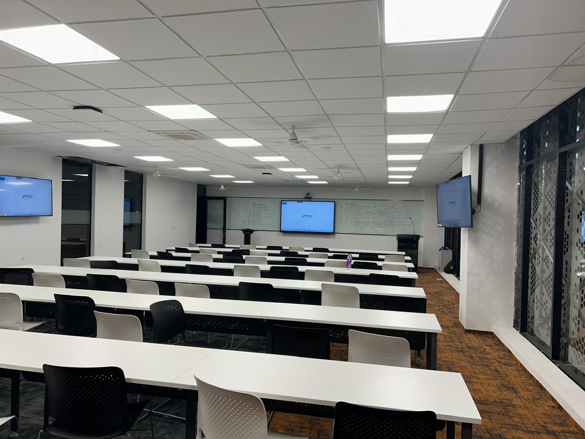

Client / environment examples
Galgotias
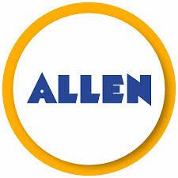
AllenAakash
Great Lakes
Plutus IAS
Drishti
Education, Coaching & Training
Classrooms where teachers can teach without fighting the technology.
Education spaces need clear display, clear voice, easy writing, content sharing and simple handover for teachers.
What you require
- Smart classrooms and training rooms
- Interactive panels, projectors and displays
- Classroom audio, cameras and content sharing
- Teacher training and quick support
What GPSPL supplies
- MAXHUB, Newline and BenQ-style panels
- Epson projectors and display systems
- Sennheiser microphones and classroom audio
- UPS backup, installation and AMC
MAXHUBNewline BenQEpsonSennheiserLumensSamsungLuminous
BenQEpsonSennheiserLumensSamsungLuminous
SennheiserLumensSamsungLuminousCase study pattern: smart classroom rollout
students cannot see or hear properly, and teachers need simple controls.
GPSPL checks room size, viewing distance, glare, audio pickup, cabling and teacher workflow.
easier teaching, better classroom engagement and support-ready installation.
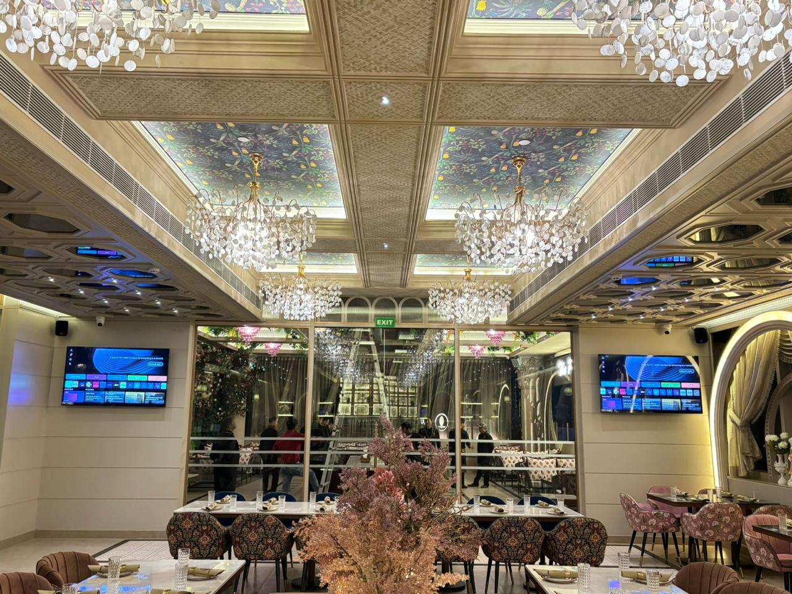
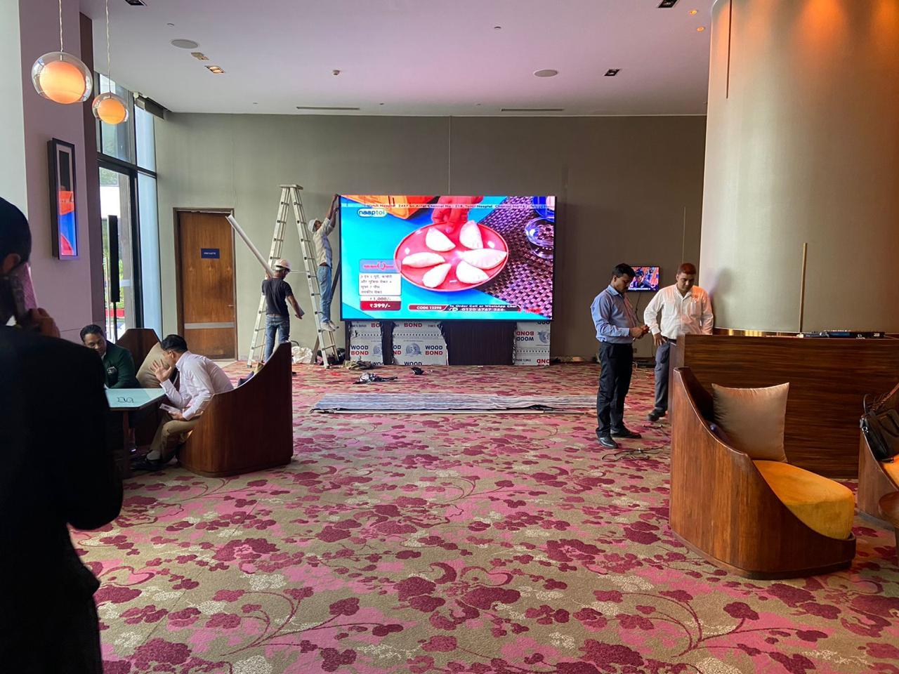
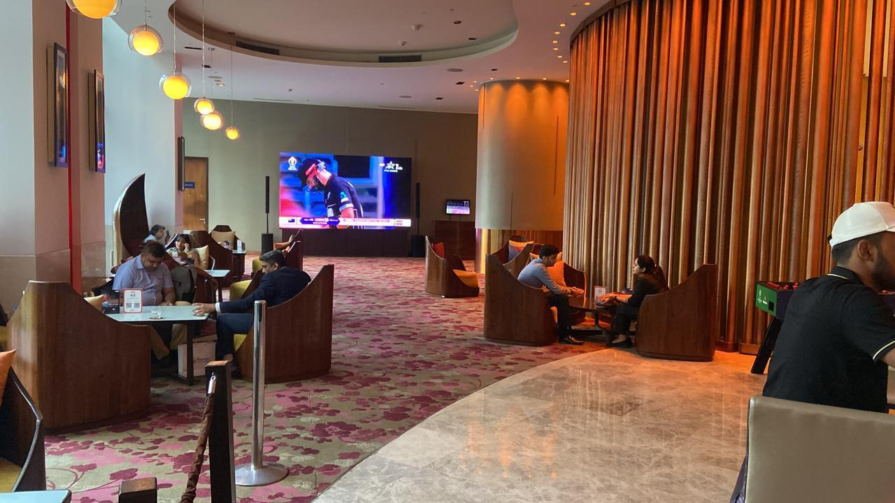
Client / environment examples
Oberoi
Taj
Novotel
The Claridges
Leisure Hotels
Kanha Hotels
Hospitality, Hotels & Venues
Guest spaces, banquet halls and lobbies that feel premium from the first look.
Hotels need technology that looks clean, sounds good and works during events without last-minute panic.
What you require
- Lobby LED, signage and hospitality displays
- Banquet audio and event presentation
- Meeting-room AV for business guests
- AMC for event-critical spaces
What GPSPL supplies
- Active LED, commercial displays and projectors
- JBL/Harman audio, microphones and control
- Digital signage and content-ready screens
- Installation, calibration and support
Samsung LG
LG AbsenSennheiser
AbsenSennheiserCase study pattern: hotel lobby and banquet AV
the venue needs strong visual impact and reliable audio for changing events.
GPSPL plans display brightness, LED size, audio coverage, microphone use, source routing and service access.
better guest experience, cleaner events and predictable maintenance.
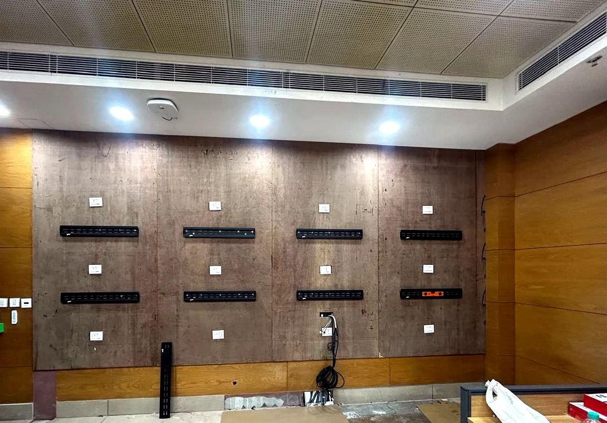


Client / environment examples
Northern Railway
Public institutions
Command rooms
Auditoriums
Government, Public Sector & Institutions
Control rooms, auditoriums and public spaces built for reliability.
Public-sector spaces need clear visibility, controlled operation, documented handover and systems that are easy to maintain.
What you require
- Command centers and monitoring rooms
- Video walls, KVM and AV switching
- Auditorium AV and public display systems
- Reliable power and AMC response planning
What GPSPL supplies
- LED/LCD video walls and controllers
- ATEN KVM, matrix switching and extenders
- Control systems, projectors and audio
- UPS backup and preventive maintenance
ATENAbsenSamsungLuminousCase study pattern: command room display and switching
operators need many sources visible without cable confusion.
GPSPL maps source count, video wall layout, KVM access, rack design, power backup and control workflow.
clearer monitoring and easier maintenance.
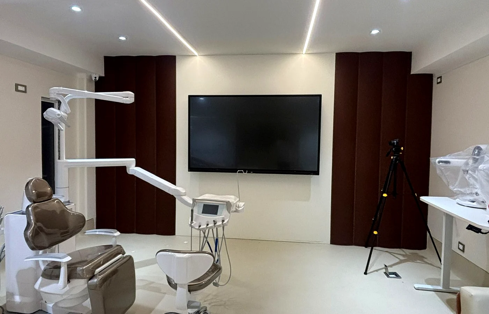

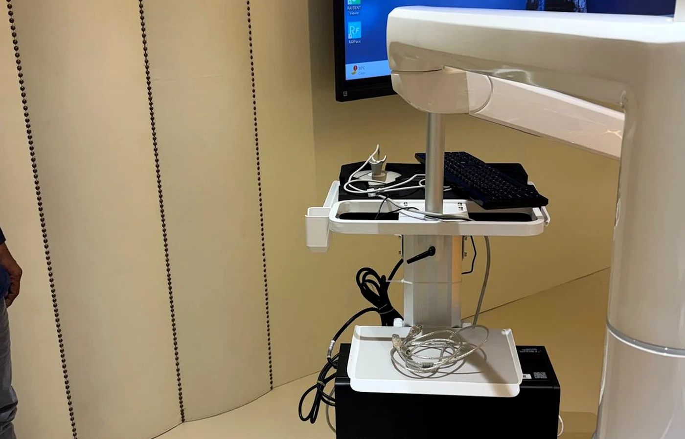
Client / environment examples
Apollo Clinic
Moolchand
Stunning Dentistry
Clinics
Training rooms
Healthcare, Clinics & Dentistry
Communication and training spaces that stay dependable.
Healthcare and clinic teams need clear patient communication, consultation displays, staff training rooms and support that respects daily operations.
What you require
- Waiting area displays and patient education
- Consultation-room screens for clinics and dentistry
- Training rooms and admin meeting-room AV
- Power backup and support handover
What GPSPL supplies
- Commercial displays, signage and consultation screens
- Video conferencing, microphones and speakers
- Projectors, interactive displays and UPS
- Installation, handover and AMC planning
SamsungLGSennheiserLuminousCase study pattern: clinic and patient-display upgrade
patients need clear information screens and doctors need simple consultation displays.
GPSPL plans screen size, placement, source management, UPS backup, cabling and service access.
clearer patient communication and easier day-to-day support.
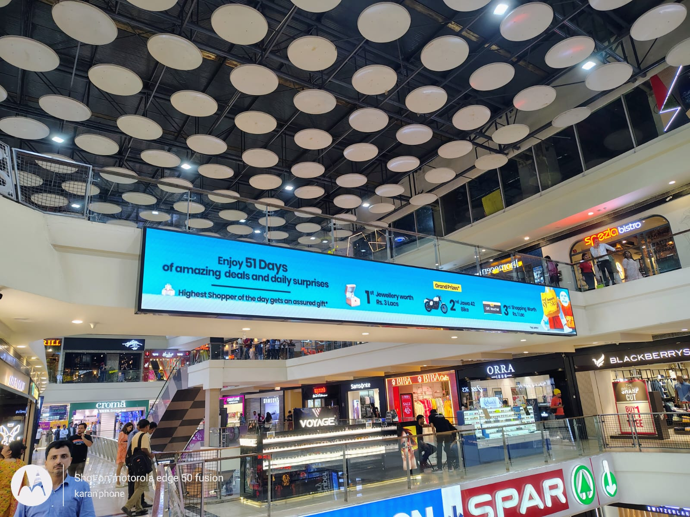
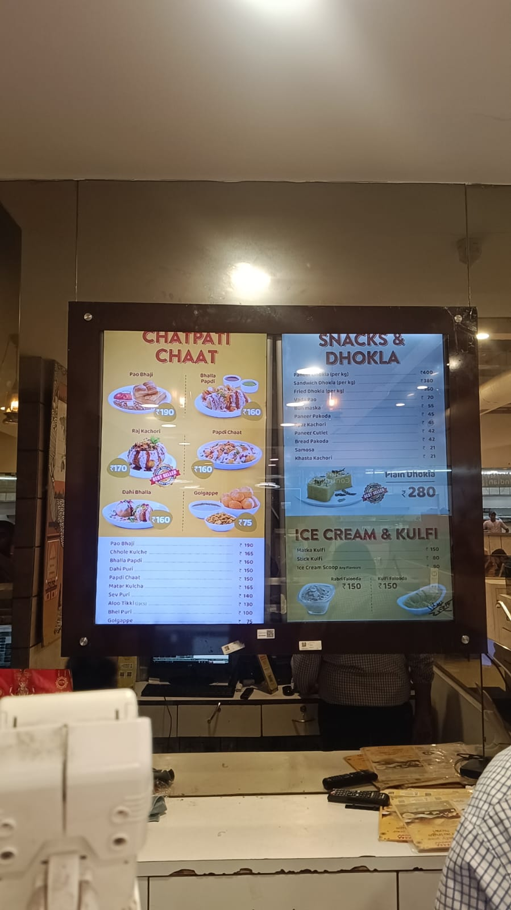

Client / environment examples
Zomato
Ferns N Petals
Bikanervala
Gola Sizzlers
Tops
Retail, Food & Customer Experience
Displays and sound that help customers notice, choose and buy.
Retail and food spaces need visible offers, menu boards, clean screens, reliable media playback and simple support.
What you require
- Menu boards and offer displays
- Digital signage and commercial screens
- Background audio and customer engagement
- LED displays for high-impact locations
What GPSPL supplies
- Commercial displays, media players and mounts
- Active LED and signage-ready infrastructure
- Professional audio and cabling
- AMC and service support
SamsungLGAbsenCase study pattern: retail signage rollout
stores need better visibility for menus, offers and customer messaging.
GPSPL plans display size, brightness, mounting, media input, cabling and service access.
sharper customer communication and easier updates.

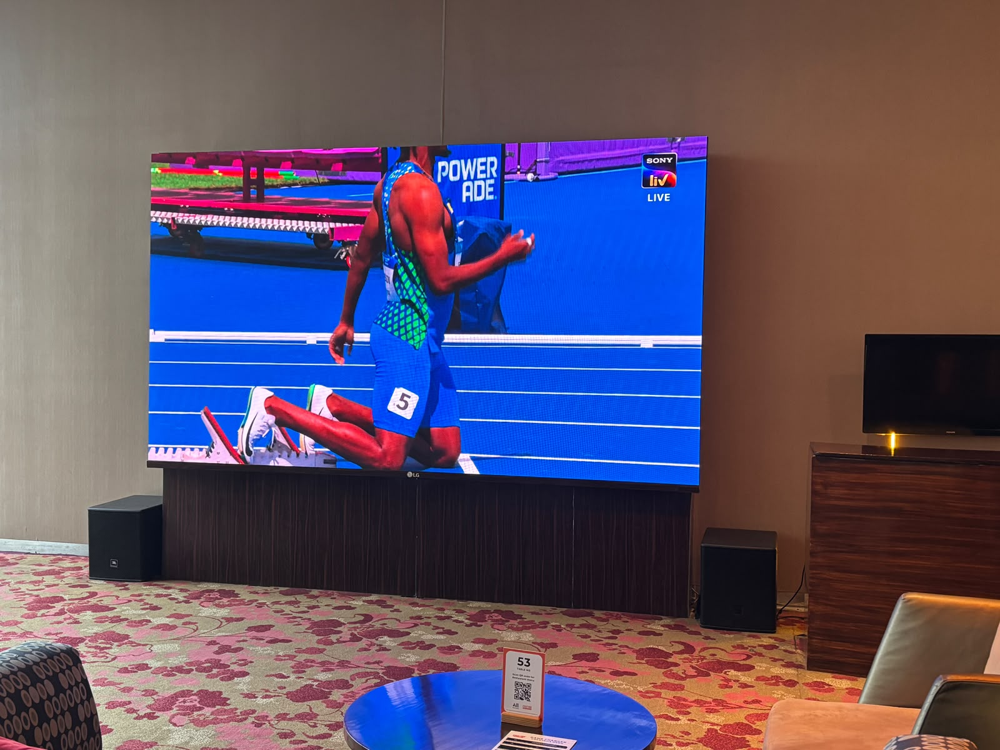
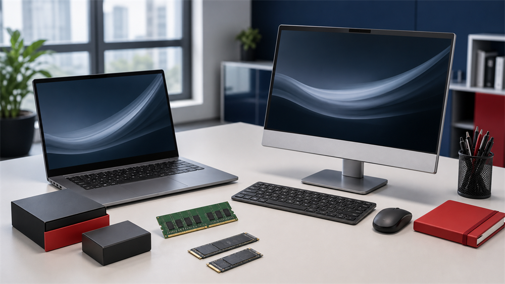
Client / environment examples
Emaar
Elan
ATS Infrastructure
Sales galleries
Real Estate, Sales Galleries & Smart Properties
Property presentation that helps buyers understand the space faster.
Real estate teams need impressive sales galleries, clear meeting rooms, lobby displays and technology that supports presentations.
What you require
- Sales gallery displays and LED walls
- Interactive property presentations
- Meeting-room AV and digital signage
- Lobby screens and automation readiness
What GPSPL supplies
- Active LED, video walls and commercial displays
- Interactive panels and projectors
- Audio, automation and switching
- Installation and AMC support
SamsungLGAbsenCase study pattern: sales experience center
buyers need to see plans, visuals and project details clearly.
GPSPL plans display placement, source routing, room audio, touch interaction and service access.
more polished presentations and easier sales conversations.
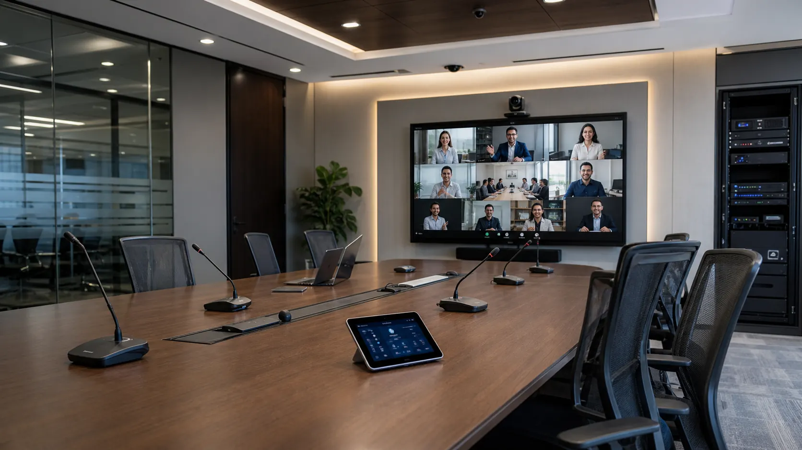
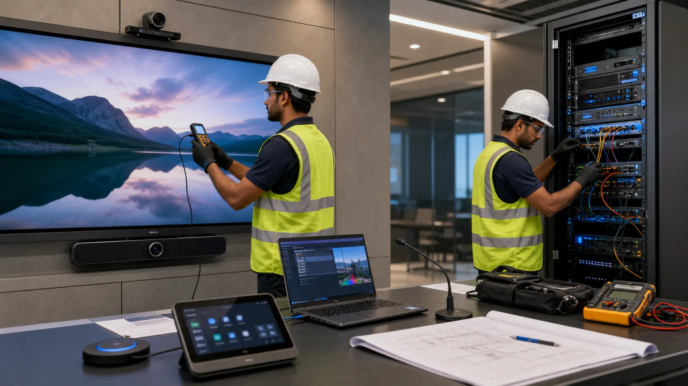
Client / environment examples
Scotiabank
Executive rooms
Secure workplaces
UPS-backed AV
BFSI & Secure Workplaces
Meeting rooms and infrastructure built for uptime and control.
Financial teams need reliable meetings, secure display workflows, power backup and support documentation.
What you require
- Executive boardrooms and conferencing
- Secure display and source switching
- UPS-backed meeting and IT rooms
- Clear support and maintenance process
What GPSPL supplies
- Displays, conferencing systems and microphones
- KVM, AV switching and control systems
- UPS, racks, cabling and IT readiness
- Preventive maintenance and AMC
HP PolySamsungSonyATENLuminousSennheiserCrestron
SamsungATENLuminousSennheiserCrestronCase study pattern: secure boardroom AV
meetings must start quickly and stay dependable.
GPSPL plans conferencing, source control, audio pickup, power backup and support documentation.
reliable collaboration with a clear service path.
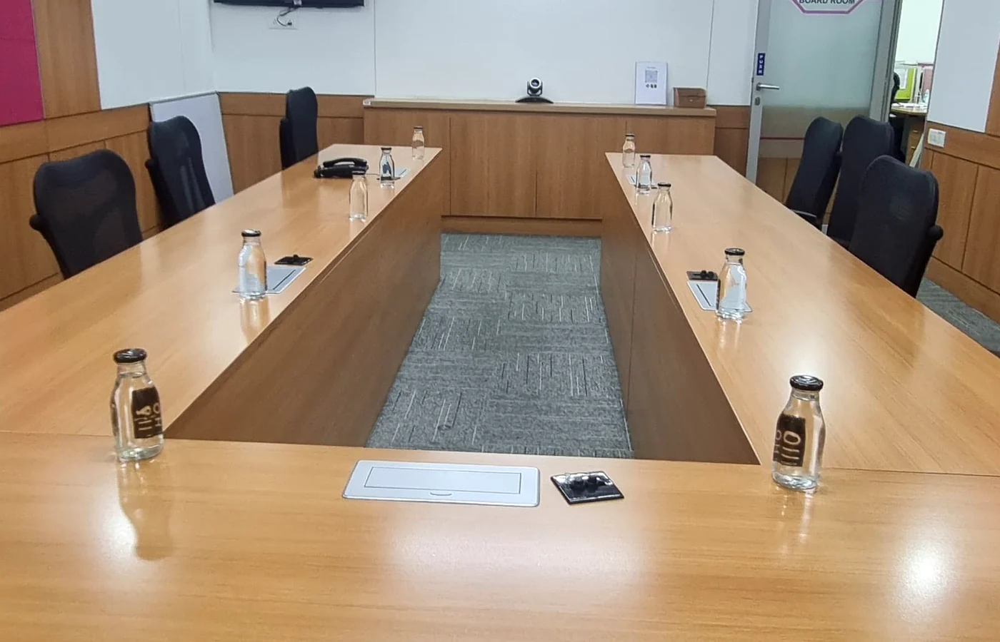
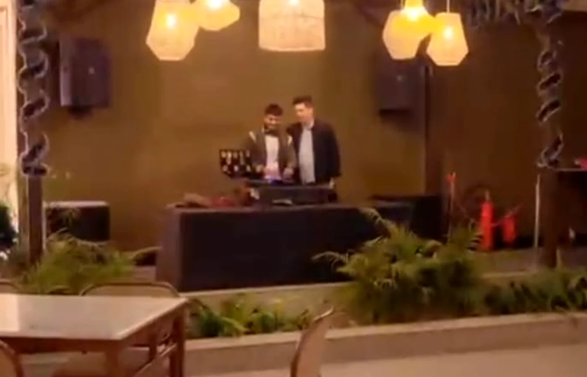
Client / environment examples
Creative teams
Production rooms
Training studios
Media, Creative & Production
Creative rooms where teams can draw, review, present and collaborate.
Media teams need accurate displays, creative peripherals, review-room AV and reliable connectivity.
What you require
- Creative pen displays and pro monitors
- Review rooms and presentation displays
- AV switching and workstation connectivity
- Training and collaboration spaces
What GPSPL supplies
- Wacom creative displays and peripherals
- Professional displays and projectors
- ATEN connectivity and KVM workflows
- Audio, conferencing and support
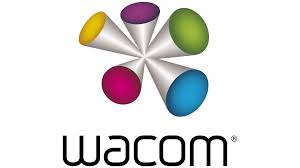
WacomSamsungATEN HPDell
HPDellCase study pattern: creative review room
designers need accurate display and easy review presentation.
GPSPL maps display size, pen-display workflow, source switching, audio and network readiness.
smoother creative review and better technology support.
Client / environment examples
Honda
Showrooms
Training spaces
Experience centers
Automotive Showrooms & Training
Showrooms and training rooms that make products easier to explain.
Automotive environments need impact displays, product presentation tools, training-room AV and reliable support.
What you require
- Showroom LED and digital displays
- Training room AV and interactive screens
- Background audio and customer experience
- AMC for customer-facing technology
What GPSPL supplies
- Active LED, commercial displays and signage
- Interactive panels and projectors
- Audio, microphones and conferencing
- UPS backup and service support
AbsenSamsungLGCase study pattern: showroom visual experience
product visuals must catch attention and training spaces must be easy to operate.
GPSPL plans display brightness, audio coverage, source inputs, power and support access.
stronger showroom experience and cleaner staff training.
Case Study Framework
Every industry story follows a clear project logic.
When real project photos and approvals are ready, the admin panel can turn each block into a full case-study page with client, industry, technologies, gallery and results.
What you require
We identify room type, users, display size, audio needs, content source, uptime, power and support expectations.
What we supply
We map the requirement to displays, LED, projectors, audio, KVM, UPS, interactive panels, cameras, racks and accessories.
Challenges
We check glare, acoustics, cabling, power, network, mounting, maintenance access, user training and existing infrastructure.
How we do it
We prepare the BOQ, supply products, coordinate installation, test the system, train users and plan AMC support.
Need help choosing?
Tell us your industry and room type. GPSPL will map the right solution.
Share whether it is a boardroom, classroom, hotel lobby, command room, clinic, showroom or retail display. We will help with product selection, integration scope and support planning.